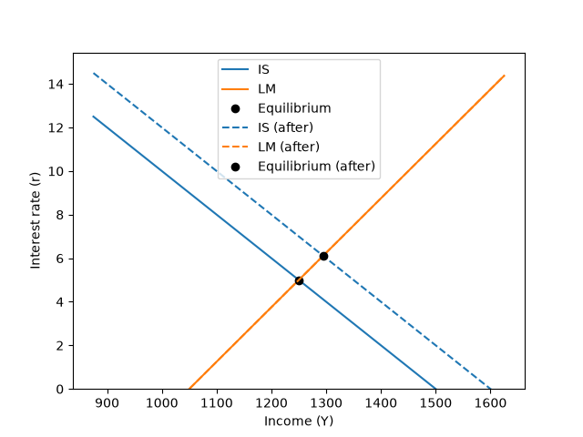
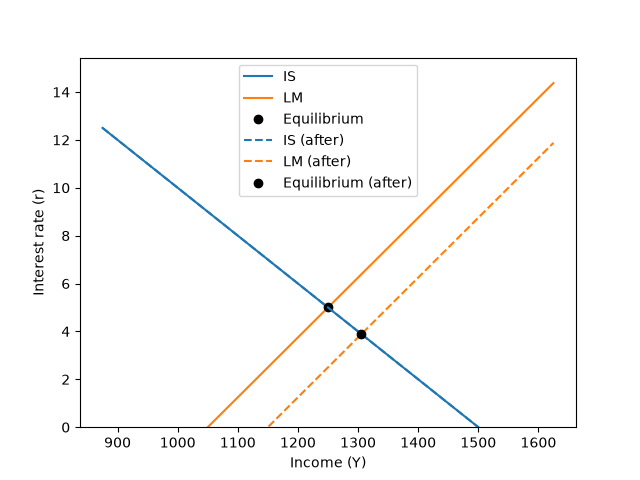

第 13 章: IS-LM 分析¶
13.1 この章の地図¶
第 4 部の最初の章です。これまでの道具（関数、データクラス、NumPy の連立方程式、matplotlib の図）を組み合わせて、マクロ経済学の中心的なモデルである IS-LM を実装します。
| 項目 | 内容 |
|---|---|
| 経済学の題材 | IS 曲線、LM 曲線、財政政策、金融政策、クラウディングアウト、流動性のわな（マインドマップ 5-6） |
| 使う Python の機能 | データクラスの既定値と検証（__post_init__）、float | None の型ヒント、dataclasses.replace、np.linalg.solve、図の重ね描き |
| 完成形 | IsLmModel、is_income、lm_interest、solve_equilibrium、plot_islm |
| ファイル | 実装: lib/chapter13/islm.py／テスト: test/chapter13/test_islm.py（自分で書くときは、practice/chapter13/ に、同じ名前で作ります） |
経済学の式とコードの対応¶
財市場と貨幣市場を、直線の式で表します。
| 市場 | 式 | コード |
|---|---|---|
| 消費 | C = C0 + c(Y − T) | autonomous_consumption、mpc、tax |
| 投資 | I = I0 − b·r（利子率が高いと減る） | autonomous_investment、investment_sensitivity |
| 財市場の均衡（IS 曲線） | (1 − c)·Y + b·r = C0 − cT + I0 + G | is_income(model, rate) |
| 貨幣需要 | L = k·Y − h·r（所得で増え、利子率で減る） | money_income_sensitivity、money_interest_sensitivity |
| 貨幣市場の均衡（LM 曲線） | M ÷ P = k·Y − h·r | lm_interest(model, income) |
| 均衡 | IS と LM の交点 | solve_equilibrium(model) |
記号について: この章では、第 1〜7 章の記号と、別の意味になるものが多くあります。c は限界消費性向（供給曲線の切片ではない）、b は投資の利子率感応度（需要曲線の傾きではない）、k は貨幣需要の所得感応度（第 5 章の調整の速さとは別）、r は利子率（第 10 章の資本の価格とは別）、L は貨幣需要（第 10 章の労働量とは別）、P は物価水準（個別の財の価格ではない）です。A は、利子率にも所得にも依存しない支出（A = C0 − cT + I0 + G）、T は定額税、M は貨幣供給、h は貨幣需要の利子率感応度です。一覧は、記号について を参照してください。
本書の標準のモデルは、C0 = 100、c = 0.8、T = 50、I0 = 140、b = 10、G = 100、M ÷ P = 525、k = 0.5、h = 20 です。このとき、IS 曲線は 0.2Y + 10r = 300、LM 曲線は 0.5Y − 20r = 525 です。
13.2 予想する¶
標準のモデルについて、紙に、次のことを書いてください。
- IS 曲線は、右下がりですか、右上がりですか。利子率が 0 のとき、所得はいくつですか
- LM 曲線は、右下がりですか、右上がりですか。所得が 1050 のとき、利子率はいくつですか
- 均衡の所得と利子率は、いくつですか。ヒント: 利子率 5 のとき、IS 曲線の所得は 1250 です
- 政府支出を 100 から 120 に増やすと、所得はいくつ増えますか。利子率が変わらなければ、乗数 5 を使って 100 増えます。実際は、それより多いか、少ないか
答えは、IS は右下がりで、利子率 0 のとき所得 1500。LM は右上がりで、所得 1050 のとき利子率 0。均衡は所得 1250、利子率 5 です。最後の問いは、少ないです。利子率が上がり、民間の投資が減る（クラウディングアウト）からです。具体的な値は、テストで確かめます。
13.3 データクラスの使い方¶
係数をまとめる¶
モデルの係数は、10 個あります。バラバラの引数にすると、関数の呼び出しが長くなります。第 7 章で使ったデータクラスにまとめ、既定値を標準のモデルの値にします。
@dataclass(frozen=True)
class IsLmModel:
"""IS-LM モデルの係数。既定値は、本書の標準のモデル。"""
autonomous_consumption: float = 100 # C0: 基礎消費
mpc: float = 0.8 # c: 限界消費性向
tax: float = 50 # T: 定額税
autonomous_investment: float = 140 # I0: 利子率が 0 のときの投資
investment_sensitivity: float = 10 # b: 投資の利子率感応度
government: float = 100 # G: 政府支出
money_supply: float = 525 # M: 名目貨幣供給
price_level: float = 1 # P: 物価水準
money_income_sensitivity: float = 0.5 # k: 貨幣需要の所得感応度
money_interest_sensitivity: float = 20 # h: 貨幣需要の利子率感応度
interest_floor: float | None = None # 利子率の下限（流動性のわな）
def __post_init__(self) -> None:
if not 0 <= self.mpc < 1:
raise ValueError("限界消費性向は 0 以上 1 未満でなければならない")
if self.investment_sensitivity <= 0:
raise ValueError("投資の利子率感応度は正でなければならない")
if self.money_interest_sensitivity <= 0:
raise ValueError("貨幣需要の利子率感応度は正でなければならない")
if self.money_income_sensitivity <= 0:
raise ValueError("貨幣需要の所得感応度は正でなければならない")
if self.price_level <= 0:
raise ValueError("物価水準は正でなければならない")
__post_init__ は、データクラスが作られた直後に呼ばれる、検証のための場所です。経済学で意味のない係数（限界消費性向が 1 以上など）では、モデルを作れないようにします。
interest_floor: float | None = None の float | None は、「小数、または None（値がない）」という型ヒントです。利子率に下限がないときは、None にします。
政策を試す¶
政策は、「係数を 1 つだけ変えたモデル」を作ることで表します。
IsLmModel(government=120) # 標準のモデルの政府支出だけを 120 にする
dataclasses.replace(model, tax=40) # 既にあるモデルから、税だけを変えたコピーを作る
frozen=True で、作ったモデルの値は書き換えられません。「元のモデル」と「政策後のモデル」を、並べて比べられます。
13.4 Red → Green → Refactor¶
IS 曲線と LM 曲線¶
予想した値を、テストにします。
def test_IS曲線は利子率が5のとき所得1250で利子率が0のとき所得1500() -> None:
model = IsLmModel()
assert is_income(model, 5) == pytest.approx(1250)
assert is_income(model, 0) == pytest.approx(1500)
def test_LM曲線は所得が1250のとき利子率5で所得が1050のとき利子率0() -> None:
model = IsLmModel()
assert lm_interest(model, 1250) == pytest.approx(5)
assert lm_interest(model, 1050) == pytest.approx(0)
def autonomous_spending(model: IsLmModel) -> float:
"""利子率と所得に依存しない支出 A = C0 - c·T + I0 + G。"""
return (
model.autonomous_consumption
- model.mpc * model.tax
+ model.autonomous_investment
+ model.government
)
def is_income(model: IsLmModel, rate: float) -> float:
"""IS 曲線: 利子率 r のときに財市場を均衡させる所得。"""
return (autonomous_spending(model) - model.investment_sensitivity * rate) / (
1 - model.mpc
)
def lm_interest(model: IsLmModel, income: float) -> float:
"""LM 曲線: 所得 Y のときに貨幣市場を均衡させる利子率（下限があれば、それ以上）。"""
rate = (
model.money_income_sensitivity * income - model.money_supply / model.price_level
) / model.money_interest_sensitivity
if model.interest_floor is not None:
return max(rate, model.interest_floor)
return rate
IS 曲線は、利子率から所得を、LM 曲線は、所得から利子率を求めます。図では、横軸が所得、縦軸が利子率なので、どちらも描けます。
均衡を連立方程式で解く¶
IS と LM の 2 つの式を、未知数 (Y, r) の連立方程式として、第 9 章の np.linalg.solve で解きます。
def test_標準のモデルの均衡は所得1250で利子率5() -> None:
income, rate = solve_equilibrium(IsLmModel())
assert income == pytest.approx(1250)
assert rate == pytest.approx(5)
def test_均衡はIS曲線とLM曲線の両方の上にある() -> None:
model = IsLmModel()
income, rate = solve_equilibrium(model)
assert is_income(model, rate) == pytest.approx(income)
assert lm_interest(model, income) == pytest.approx(rate)
def solve_equilibrium(model: IsLmModel) -> tuple[float, float]:
"""IS 曲線と LM 曲線の交点（所得, 利子率）を、連立方程式として解く。
利子率に下限があり、解がそれを下回るときは、利子率を下限に固定して、
IS 曲線から所得を求める（流動性のわな: LM 曲線が水平になる）。
"""
coefficients = np.array(
[
[1 - model.mpc, model.investment_sensitivity],
[model.money_income_sensitivity, -model.money_interest_sensitivity],
]
)
constants = np.array(
[autonomous_spending(model), model.money_supply / model.price_level]
)
income, rate = np.linalg.solve(coefficients, constants)
if model.interest_floor is not None and rate < model.interest_floor:
rate = model.interest_floor
income = is_income(model, rate)
return float(income), float(rate)
標準のモデルでは、均衡は (1250.0, 5.0) です。IS 曲線と LM 曲線の両方の上にあることも、テストで確かめました。
財政政策とクラウディングアウト¶
政府支出を 100 から 120 に増やします。
def test_財政支出を増やすと所得と利子率が上がる() -> None:
before = solve_equilibrium(IsLmModel())
after = solve_equilibrium(IsLmModel(government=120))
assert after[0] == pytest.approx(1294.4444, abs=1e-3)
assert after[1] == pytest.approx(6.1111, abs=1e-3)
assert after[0] > before[0]
assert after[1] > before[1]
def test_クラウディングアウトで所得の増加は乗数効果より小さい() -> None:
before_income, _ = solve_equilibrium(IsLmModel())
after_income, _ = solve_equilibrium(IsLmModel(government=120))
# 利子率が一定なら、所得は 20 / (1 - 0.8) = 100 増える
assert after_income - before_income == pytest.approx(44.444, abs=1e-3)
assert after_income - before_income < 100
結果は、所得が 1250 から 1294.44 に増え（+44.44）、利子率が 5 から 6.11 に上がります。利子率が変わらなければ 100 増えるはずが、約 44 しか増えていません。残りの約 56 は、利子率の上昇で民間の投資が減ったことで失われています。これが、マインドマップの「クラウディングアウト」です。

破線が政策後です。IS 曲線だけが右へ動き、LM 曲線は動かないので、破線の LM 曲線は元の LM 曲線に重なって見えません。
金融政策¶
名目貨幣供給を 525 から 575 に増やします。
def test_貨幣供給を増やすと所得が増え利子率が下がる() -> None:
before = solve_equilibrium(IsLmModel())
after = solve_equilibrium(IsLmModel(money_supply=575))
assert after[0] == pytest.approx(1305.5556, abs=1e-3)
assert after[1] == pytest.approx(3.8889, abs=1e-3)
assert after[0] > before[0]
assert after[1] < before[1]
所得は 1305.56（+55.56）に増え、利子率は 3.89 に下がります。財政政策とは逆に、利子率が下がるので、民間投資が増え、クラウディングアウトは起きません。

減税（T を 50 から 40 に）も、IS 曲線を右へ動かします。結果は、所得 1267.78（+17.78）、利子率 5.44 です。減税 10 の効果（+17.78）が、政府支出 20 の効果（+44.44）の 40% なのは、減税額が半分で、さらにその 80%（限界消費性向 c）しか消費に回らないからです（0.5 × 0.8 = 0.4）。
傾きで政策の効果が変わる¶
マインドマップの「財政は LM が緩やかなほど有効、金融は IS が緩やかなほど有効」を、テストにします。
def test_IS曲線が緩やかなほど金融政策は有効() -> None:
# 投資の利子率感応度 b を 10 から 20 にすると、IS 曲線は緩やかになる
gentle = IsLmModel(investment_sensitivity=20)
steep_gain = (
solve_equilibrium(IsLmModel(money_supply=575))[0]
- solve_equilibrium(IsLmModel())[0]
)
gentle_gain = (
solve_equilibrium(dataclasses.replace(gentle, money_supply=575))[0]
- solve_equilibrium(gentle)[0]
)
assert gentle_gain == pytest.approx(71.4286, abs=1e-3)
assert gentle_gain > steep_gain
def test_LM曲線が緩やかなほど財政政策は有効() -> None:
# 貨幣需要の利子率感応度 h を 20 から 40 にすると、LM 曲線は緩やかになる
gentle = IsLmModel(money_interest_sensitivity=40)
steep_gain = (
solve_equilibrium(IsLmModel(government=120))[0]
- solve_equilibrium(IsLmModel())[0]
)
gentle_gain = (
solve_equilibrium(dataclasses.replace(gentle, government=120))[0]
- solve_equilibrium(gentle)[0]
)
assert gentle_gain == pytest.approx(61.5385, abs=1e-3)
assert gentle_gain > steep_gain
| 設定 | 貨幣供給 +50 の効果（金融政策） | 政府支出 +20 の効果（財政政策） |
|---|---|---|
| 標準（b = 10、h = 20） | +55.56 | +44.44 |
| IS が緩やか（b = 20） | +71.43 | — |
| LM が緩やか（h = 40） | — | +61.54 |
IS 曲線が緩やか（投資が利子率に敏感）だと、金融政策で利子率が下がったときの、投資の増え方が大きいので、効果が大きくなります。LM 曲線が緩やか（貨幣需要が利子率に敏感）だと、政府支出で所得が増えても、利子率があまり上がらず、クラウディングアウトが小さくなるので、財政政策の効果が大きくなります。
流動性のわな¶
利子率には、下限があります。利子率が下限に達すると、債券の価格はこれ以上上がらず、むしろ下がると予想されるので、人々は債券を買わず、追加の貨幣をそのまま持とうとします。貨幣需要が、利子率に対して無限に弾力的になり、LM 曲線が水平になります。モデルには、interest_floor（利子率の下限）で表します。
def test_流動性のわなで金融政策を強めても所得は増えない() -> None:
trap = IsLmModel(interest_floor=2)
# 通常の範囲では、下限は効かない
assert solve_equilibrium(trap) == pytest.approx((1250, 5))
# 貨幣供給を大きく増やすと、利子率は下限の 2 に張り付き、所得は 1400 で止まる
big = solve_equilibrium(dataclasses.replace(trap, money_supply=2000))
bigger = solve_equilibrium(dataclasses.replace(trap, money_supply=3000))
assert big == pytest.approx((1400, 2))
assert bigger == pytest.approx((1400, 2))
def test_流動性のわなで財政政策は乗数どおりの効果がある() -> None:
trap = IsLmModel(interest_floor=2, money_supply=2000)
before = solve_equilibrium(trap)[0]
after = solve_equilibrium(dataclasses.replace(trap, government=120))[0]
# クラウディングアウトがないので、20 / (1 - 0.8) = 100 だけ増える
assert after - before == pytest.approx(100)
貨幣供給が 2000 でも 3000 でも、均衡は (1400, 2) で変わりません。金融政策は、無効です。一方、政府支出を 20 増やすと、所得は 1400 から 1500（+100）と、乗数どおりに増えます。クラウディングアウトがなく、財政政策が最も有効になります。マインドマップの「描いて確認: 流動性のわなで財政有効・金融無効」を、数値で確かめました。
図を描く¶
def _draw_curves(
ax: Axes, model: IsLmModel, incomes: list[float], suffix: str, style: str
) -> None:
is_rates = [
(autonomous_spending(model) - (1 - model.mpc) * y)
/ model.investment_sensitivity
for y in incomes
]
lm_rates = [lm_interest(model, y) for y in incomes]
income, rate = solve_equilibrium(model)
ax.plot(incomes, is_rates, style, color="tab:blue", label=f"IS{suffix}")
ax.plot(incomes, lm_rates, style, color="tab:orange", label=f"LM{suffix}")
ax.plot([income], [rate], "o", color="black", label=f"Equilibrium{suffix}")
def plot_islm(model: IsLmModel, after: IsLmModel | None = None) -> Figure:
"""IS 曲線・LM 曲線・均衡点の図を返す。after があれば、政策後を破線で重ねる。"""
base_income, _ = solve_equilibrium(model)
incomes = [base_income * (0.7 + 0.01 * i) for i in range(61)]
fig, ax = plt.subplots()
_draw_curves(ax, model, incomes, suffix="", style="-")
if after is not None:
_draw_curves(ax, after, incomes, suffix=" (after)", style="--")
ax.set_xlabel("Income (Y)")
ax.set_ylabel("Interest rate (r)")
ax.set_ylim(bottom=0)
ax.legend()
plt.close(fig)
return fig
def test_IS_LMの図にはIS曲線とLM曲線と均衡点がある() -> None:
fig = plot_islm(IsLmModel())
ax = fig.axes[0]
assert isinstance(fig, Figure)
assert [line.get_label() for line in ax.lines] == ["IS", "LM", "Equilibrium"]
def test_政策後のモデルを渡すと移動後の曲線も描く() -> None:
after = IsLmModel(government=120)
ax = plot_islm(IsLmModel(), after=after).axes[0]
labels = [line.get_label() for line in ax.lines]
assert labels == [
"IS",
"LM",
"Equilibrium",
"IS (after)",
"LM (after)",
"Equilibrium (after)",
]
図を描く部分は、曲線を描く処理を _draw_curves に分け、元のモデルと政策後のモデルの両方に使っています（先頭の _ は、この中だけで使う関数という印です）。
実行結果¶
cd apps/economics-programming/python
uv run pytest test/chapter13
25 passed
13.5 規則で言うと¶
- 係数が多いモデルは、データクラスにまとめて、既定値を標準の値にする。 政策は、「係数を 1 つ変えたモデル」を作って、元と並べて比べる
- 係数の検証は、モデルを作る場所（
__post_init__）に 1 か所だけ書く。 どの関数でも、不正な係数が入らない - 政策の効果は、「元との差」で見る。 均衡の値だけでなく、所得の差・利子率の差を、手計算と突き合わせる
混同しやすい点を、表にまとめます。
| 混同しやすい点 | 違い |
|---|---|
| 財政政策と金融政策の利子率への影響 | 財政（IS が右へ）は利子率を上げる。金融（LM が右へ）は利子率を下げる |
| クラウディングアウトの有無 | 財政政策にはある（利子率の上昇で投資が減る）。金融政策にはない |
| 流動性のわなで効くのは | 財政政策。金融政策は効かない（利子率が下限で動けない） |
| 財政は LM、金融は IS | 財政は LM が緩やかなほど有効。金融は IS が緩やかなほど有効 |
このモデルが成り立たない場面¶
IS-LM は、物価が一定で、供給の制約がない（需要が増えれば、その分だけ生産が増える）前提です。完全雇用に近いと、需要の増加は、所得ではなく、物価を上げます（第 14 章）。また、この章のモデルは、直線の式です。実際の IS 曲線や LM 曲線は、曲線で、傾きが場所によって変わります。さらに、利子率の下限（流動性のわな）は、下限の値と、そこに達する条件を、実際のデータで確かめる必要があります。
13.6 練習問題¶
| 種類 | 問題 |
|---|---|
| 想起 | 本文を閉じて、IsLmModel と solve_equilibrium を自分で書いてください。連立方程式の係数の行列を間違えないようにします |
| 生成 | 解説を見る前に、「政府支出を 20 増やすと同時に、貨幣供給を増やして、利子率を元の 5 に保つには、貨幣供給をいくつにすればよいか」を考えて、テストを書いてください |
| 多様 | 限界消費性向を 0.8 から 0.6 に、基礎投資 autonomous_investment を 140 から 340 に変えて、均衡と、政府支出 +20 の効果を、手計算とテストで確かめてください。続けて、基礎投資を 140 のまま、限界消費性向だけを 0.6 にすると、均衡の利子率が負になります。なぜ負になるのかを、IS 曲線と LM 曲線の図で説明してください |
| 交互 | 第 9 章の乗数 1 ÷ (1 − c) と、この章の政府支出 +20 の効果を比べ、その差が、クラウディングアウトの大きさになることを、説明してください |
解答（先に自分で取り組んでから、開いてください）
想起: 本文と見比べて、__post_init__ の検証、係数の行列 [[1 - c, b], [k, -h]]、定数 [A, M / P] を確かめます。
生成: 政府支出 120 で、IS 曲線は 0.2Y + 10r = 320 です。利子率 5 のとき、Y = (320 − 50) ÷ 0.2 = 1350 です。LM 曲線で、M ÷ P = 0.5 × 1350 − 20 × 5 = 575 です。
def test_政府支出を増やしても貨幣供給を575にすれば利子率は5のまま() -> None:
income, rate = solve_equilibrium(IsLmModel(government=120, money_supply=575))
assert income == pytest.approx(1350)
assert rate == pytest.approx(5)
財政政策だけなら、利子率は 5 から 6.11 に上がります。金融政策（貨幣供給を 525 から 575 に）を組み合わせると、利子率が上がらず、クラウディングアウトなしに、所得が 1350（+100）まで増えます。
多様:
| 所得 | 利子率 | |
|---|---|---|
| 限界消費性向 0.6、基礎投資 340 | 1188.46 | 3.46 |
| 政府支出 +20 | 1219.23 | 4.23 |
| 限界消費性向 0.6、基礎投資 140（利子率が負） | 880.77 | −4.23 |
政府支出 +20 で、所得は 30.77 増えます。乗数は 1 ÷ (1 − 0.6) = 2.5 なので、利子率が一定なら +50 のはずです。差は、クラウディングアウトです。
利子率が負になる理由: 限界消費性向 0.6、基礎投資 140 のとき、IS 曲線は 0.4Y + 10r = 310 で、r = 0 のとき Y = 775 です。LM 曲線は 0.5Y − 20r = 525 で、r = 0 のとき Y = 1050 です。IS 曲線が、LM 曲線の r = 0 の点（Y = 1050）より、左にあるので、交点は r < 0 の側にできます。需要が小さい（乗数が小さく、基礎投資も小さい）のに、貨幣が余っている状況です。このモデルは、利子率に下限（0）を置いていないので、負の利子率が出ます。利子率の下限は、interest_floor で表せます（流動性のわなの節を参照）。
交互: 利子率が一定なら、所得は 20 × 5 = 100 増えるはずです。実際は +44.44 なので、差は 55.56 です。この差は、利子率が 5 から 6.11 に上がり（+1.11）、投資が 10 × 1.11 = 11.1 減って、それに乗数 5 を掛けた値（11.1 × 5 = 55.6）と一致します。
13.7 振り返り¶
- クラウディングアウトで、所得の増加が小さくなることを、予想できましたか
- 流動性のわなで、財政政策だけが効くことを、グラフと数値のどちらで理解しましたか
- このモデルに足りないものは、何だと思いますか
13.8 まとめ¶
- 係数をデータクラスにまとめ、IS 曲線・LM 曲線の交点を、連立方程式で解いた
- 財政政策（クラウディングアウトあり）と金融政策（なし）の効果、曲線の傾きによる違い、流動性のわなを、手計算の値とテストで確かめた
- IS-LM の図を、政策の前後で重ねて描いた
次の章では、このモデルから総需要曲線を導き、総供給曲線と組み合わせて、物価も含めた分析を行います。